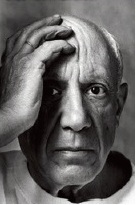

Pablo Picasso (1881-1973), yirminci yüzyılın en ünlü ve en etkili sanatçılarından biriydi. Tüm zamanların en üretken ve en çok yönlü ressamı olarak, dikkatlerin üzerinde olduğu seksen yıllık kariyeri boyunca müthiş bir biçim çeşitliliği kurdu ve ustalaştı.

İspanya, Malaga’da doğan Picasso, bir ‘dahi çocuk’tu. Bir sanat öğretmeni olan babası, genç çocuğun yeteneğini gördü ve bu yönde destekledi. Picasso, o zamanın avangart sanat sahnesinin merkezi olan Paris’e gitti. 1901’de en iyi arkadaşının intiharını takip eden zamanda Picasso, “Mavi Dönem” olarak bilinen bir döneme girdi; konularının hüznünü ve yoksunluğunu iletmek için mavinin çeşitli gölgelerinde kompozisyonlar resmetti. 1904 yılıyla beraber Picasso, daha sıcak tonlara kaydı ve sirk oyuncularının ve palyaçoların görsellerine odaklanmaya başladığı “Gül Zamanı”na girdi.
1907’de Picasso, Les Demoiselles d’Avignon adlı ilk kübist resmini yaptı. Kadın güzelliğinin Batı ölçütünden ayrılarak Polinezyalı, İberyalı ve Afrikalı heykelleri figürleri için model olarak kullandı. Tek-nokta perspektifinin (Rönesans’tan beri baskın olan teknik) kurallarını reddeden Picasso ve arkadaşı kübist Georges Braque, sanatın rotasını sonsuza dek değiştirdi.
Picasso, sürekli olarak biçimlerini ve resme olan yaklaşımını gözden geçirdi. 1917’de örneğin, tek renkli kübist resimlerine renk katmaya başladı. Sonraları Üç Müzisyen (1921) adlı resminde kübist unsurları, figürlerin dinamik ritmini yakalamak için canlı renklerle ve motiflerle birleştirdi. 1920’lerin sonlarında Picasso, gerçeküstücü akıma dahil olmaya başladı. Başkalaşım kavramına merak saran Picasso, 1930’lar boyunca yarı insan, yarı hayvan yaratıkların resimlerini üretti. Bu safha sırasında Picasso, aynı zamanda şiir ve Kuyruğundan Yakalanan Arzu (1941) başlıklı bir gerçeküstücü oyun da yazdı.
Picasso’nun eserleri, İspanyol İç Savaşı’nın başlangıcından sonra 1930’ların ortalarında daha siyasi oldu. Bu sürecin en iyi bilinen resmi Guernica (1937), faşist General Francisco Franco’nun emriyle Alman bombardıman uçakları tarafından vurulan küçük bir Bask kasabasının imha edilişini tasvir eder. II. Dünya Savaşı boyunca Picasso, şöhretinin onu yok edilmekten koruduğu Nazi işgali altında Paris’te yaşadı. Picasso’nun yaratıcı enerjisi, yaşlanmakla zayıflamadı. Ölene kadar çeşitli resimler, taş baskı resimler ve çizimler yapmayı sürdürdü. Picasso’nun 1973’te bir vasiyet bırakmadan ölmesi üzerine Fransız hükümeti, Paris’te Picasso Müzesi’ni kurmak için mal varlıklarının çoğuna el koydu.
EK BİLGİLER:
1. Picasso’nun eserlerinin büyük bir kısmı, Paris’teki Picasso Müzesi’ne ek olarak New York’taki Metropolitan Sanat Müzesi’nde ve Modern Sanat Müzesi’nde, ayrıca Malaga’da Picasso Müzesi’nde ve Barcelona’daki Picasso Müzesi’nde sergilenmektedir.
2. Picasso’nun erken dönem resmi “Garçon a la Pipe”, 2004’te bir resim için dünya rekoru olan 104 milyon dolar fiyatla satıldı.